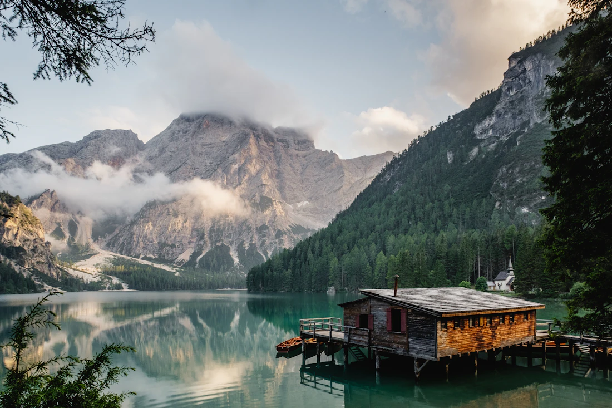
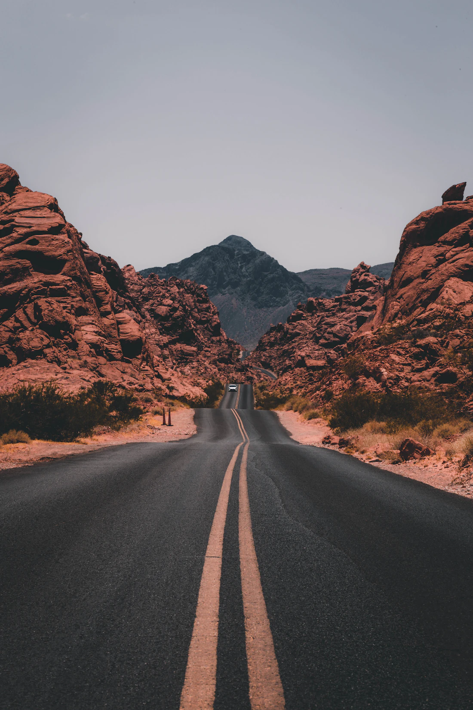

Photography portfolio · Shivamani Reddy
Finding the
extraordinary
in the everyday.
An evolving collection of landscapes, city corners, and fleeting human moments, made to be explored, not just viewed.
Photographs, gathered with intention.

01 / 60Quiet places, loud feelings46° 51′ N, 9° 31′ E
FIELD
NOTES
№ 01
NOTES
№ 01
The collection
Every frame holds
a different world.
From the hush of a distant shoreline to the rhythm of a city street, this is a growing visual journal organized by the places, people, and light that stay with us.
Browse all photographsLet the light lead
Choose a mood.

Light level
Light explorer
Find the feeling in each frame.
PlaceDolomites, Italy
CategoryLandscape
Year2026
Field journal
One tiny story at a time.
01 · Picked up in the field
Landscape
The quiet before the valley wakes
“A frame can hold the moment before the world fully wakes up.”
Travel notes
A map of the places this archive keeps.
A few favorites
Recently collected
A small looking game
Can you read the frame?
0 correct · 0 tried
Name the category
What kind of moment are we looking at?
Look closely at the light, the lines, and the little details.
Browse the collectionA living archive
Look closer.
Stay a little.
Browse the photographs, explore how they fit together, or try the collection tools. Every page is part of the same small visual world.
0Photographs
0Categories
01Ongoing journal